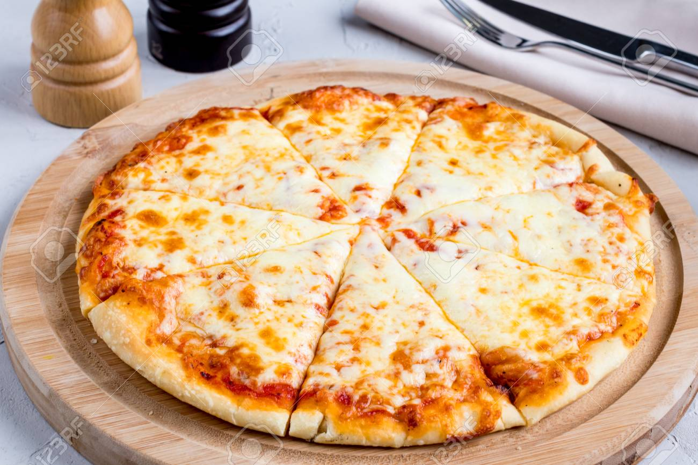

Cheese Pizza Recipe
Home

Ingredients
- 1 1/2 cups of self-rising flour, plus more for kneading
- 1 cup plain Greek yogurt
- cooking spray
- grated cheese
- marinara sauce
Recipe
- Gather all ingredients. Preheat the oven to 500 degrees F (260 degrees C).
- Mix flour and Greek yogurt together in a large bowl to form a dough; transfer to a work surface floured with self-rising flour.
- Knead dough, adding more flour as needed to keep dough from being too sticky, 8 to 10 minutes.
- Coat a 12-inch pizza pan with cooking spray and spread dough to the edges of the pan.
- Bake crust in the preheated oven for 5 to 7 minutes; add toppings and return to the preheated oven.
- Bake until crust is lightly browned, 5 to 7 minutes more.
- Enjoy!